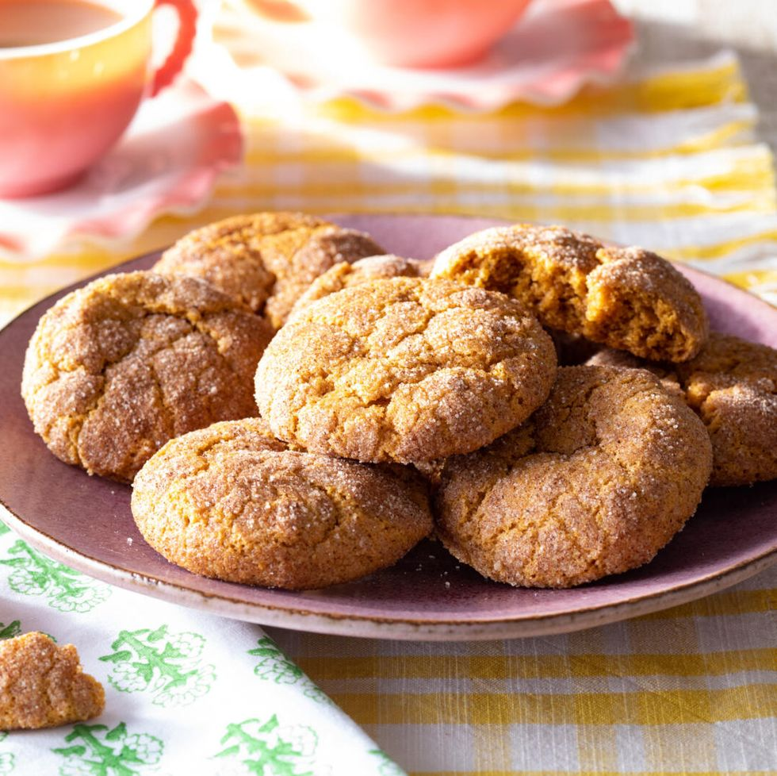

Pumpkin Snickerdoodles

Description
Pumpkin snickerdoodles are the perfect treat for fall, winter, or any time. A chewy cinnamon-sugary
delight they're fabulous for holiday gatherings, potlucks, or bake sales. What makes a snickerdoodle
a snickerdoodle is the crispy crackly outside covering a pillowy soft chewy inside. What makes this
one pumpkin is of course the pumpkin puree and pumpkin pie spice used liberally for both the inside
and outside of the cookie.
Ingredients
For the cookie dough
- 1/2 c. unsalted butter, melted
- 3/4 c. light brown sugar
- 1/3 c. pumpkin puree
- 1 tsp. vanilla extract
- 1 1/2 c. all-purpose flour
- 2 tsp. pumpkin pie spice
- 1 tsp. cream of tartar
- 3/4 tsp. baking soda
- 1/2 tsp. kosher salt
- 1/4 tsp. baking powder
For the spiced sugar
- 3 tbsp. granulated sugar
- 1 1/2 tsp. pumpkin pie spice
Steps
- For the cookie dough: In a medium bowl, whisk together the butter, brown sugar, pumpkin puree and
vanilla until well combined.
- In a separate medium bowl, whisk together the flour, pumpkin pie spice, cream of tartar, baking soda,
salt and baking powder.
- Add the flour mixture to the pumpkin mixture and stir until all the dry ingredients are well mixed.
Cover the bowl and refrigerate until the dough is firm, at least 4 hours or overnight.
- Preheat the oven to 350*F. Line 2 cookie sheets with parchment paper.
- For the spiced sugar: Stir together the granulated sugar and pumpkin pie spice in a small bowl.
- Scoop the dough into balls, about 2 tablespoons each. Roll each ball in the spiced sugar until well
coated and arrange at least 2-inches apart on the prepared baking sheets.
- Bake until the cookies are puffed, set around the edges and begin to crack on top, 11 to 13 minutes.
Let the cookies cool on the baking sheets for 5 minutes. Transfer to a wire rack to cool completely,
about 30 minutes.